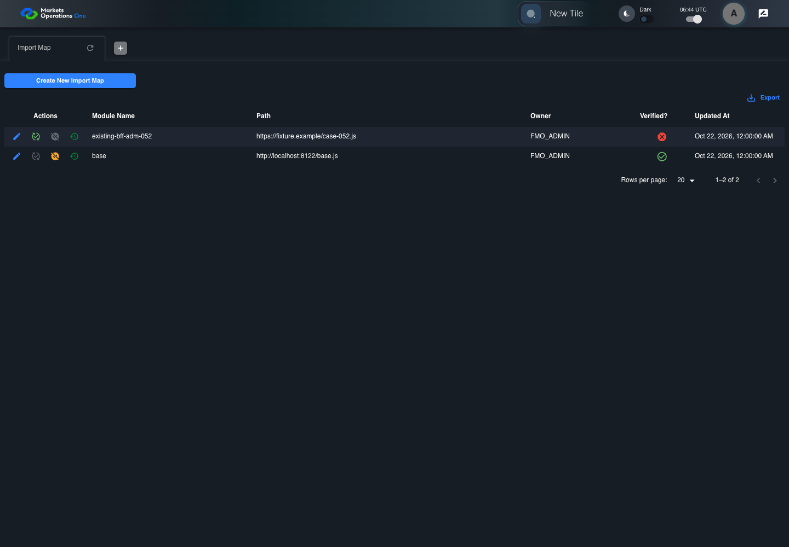
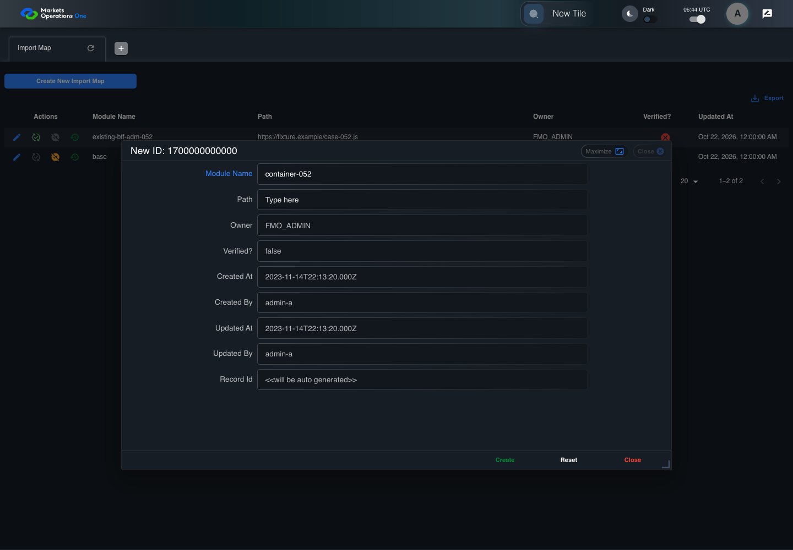
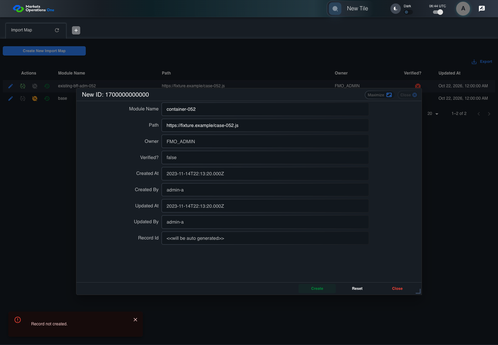

BFF-ADM-052 current BFF administration through actual UI
PASS · application/run-072/bff-adm-052-current-bff-administration-through-actual-ui-0dde90714912-attempt-1 · ACTUAL_APPLICATION_LOCAL_SERVICES
Actual current React and exact-current BFF admin controllers/services/JPA with actual migration DDL in disposable PostgreSQL. Controlled OUD/EMS2 identities and local Spring bootstrap. Fixture SQL seeds/mutates isolated records; service errors are actual database errors. Undefined agreed messages remain unresolved acceptance.
2026-10-22T06:44:14.631Z to 2026-10-22T06:44:19.556Z
Assertions and result · Artifact manifest · Exact run inputs and source hashes
Result SHA-256:402906b43624dbae3ca48c626eff255648c4a8bca2aa516ea90c428f767164c6Machine observations
- actual-identity-projection.json
a6432a8840e0b77d6acb61469590b3db1d7ad040777a07b72f163b367f51e639 - baseline-inputs.json
87116352b864fdbe6382b89b85c81e57fdf3d1d284c34c92068f3b71c3e8fcd1 - bff-boundary.json
1048adcafb46c615cf6c5cb1b9beff4bdff238fbc570c2a0eebd104ee9f6e7b9 - committed-ui-submission-comparisons.json
983849799e99e76d2b8bc55ebc769070d0c16eda70695d0c7b9465bc73751808 - creation-clock.json
50e48969906dea26fd97c0958e7670ce8ab6e1917cba55910eb458d4239c271b - fixture-step-4.json
d26df8727d9db92a1c06db420af70a8e37f29f87424d060baac5daee83cc4e2a - fixture-step-5.json
9a396b46629ecc991eebd42187596cf99c0b757922ff96e6e956f147d851bbfa - initial-persisted-records.json
43db504efa54b89325a2ed9194c43aeddaa30f4d6da1802fa4cef6688bdfe499 - persisted-after-submit.json
6e9e1a77f11a4ce6524d5e1c54af5f9b1116d09b75b382e4de068f4d6abeff9d - ui-origin-bff-requests.json
ea8f211999c04f02d966be106a12c44981deb10180d5a6ce097422bc20b98271
Screenshot capture: CAPTURED. Named frames: 14.
Step screenshot bindings: COMPLETE. 13/13 canonical steps have execution screenshots.
Bindings measure structural coverage only. They do not establish screenshot content quality or relevance.
Screenshot content review: NOT_REVIEWED. Recorded context: 0/14 frames. Identical image bytes: 7 repeated frames. Recorded context does not establish human visual review.
Canonical step timeline
Given Admin A uses subject "admin-a" with role "FMO_ADMIN" in an isolated authenticated browser
Execution: PASSED.
1. step-01 Visible state after step 1: Given Admin A uses subject "admin-a" with role "FMO_ADMIN" in an isolated authenticated browser
2026-10-22T06:44:16.950Z · 1440×1000
Step: /Users/lushevol/code/github/ratan-release-impact/workbench/tasks/ui-test-coverage-20261022/test-cases.md:16922
SHA-256:2b1a26e1aaef9a59de6e1048f5a9fbf7f388a602db701c9d73aa672cfef75eb2And the controlled Import Map fixture records the initial grid rows and persisted values
Execution: PASSED.
2. step-02 Visible state after step 2: And the controlled Import Map fixture records the initial grid rows and persisted values
2026-10-22T06:44:17.095Z · 1440×1000
Step: /Users/lushevol/code/github/ratan-release-impact/workbench/tasks/ui-test-coverage-20261022/test-cases.md:16923
SHA-256:2b1a26e1aaef9a59de6e1048f5a9fbf7f388a602db701c9d73aa672cfef75eb2Image bytes match frame 1. An unchanged image can be valid for consecutive assertions. This match does not establish correct step content.
And the controlled creation clock returns 1700000000000 milliseconds
Execution: PASSED.
3. step-03 Visible state after step 3: And the controlled creation clock returns 1700000000000 milliseconds
2026-10-22T06:44:17.146Z · 1440×1000
Step: /Users/lushevol/code/github/ratan-release-impact/workbench/tasks/ui-test-coverage-20261022/test-cases.md:16924
SHA-256:2b1a26e1aaef9a59de6e1048f5a9fbf7f388a602db701c9d73aa672cfef75eb2Image bytes match frame 2. An unchanged image can be valid for consecutive assertions. This match does not establish correct step content.
And the baseline fixture data defines "Module Name" as "container-052"
Execution: PASSED.
4. step-04 Visible state after step 4: And the baseline fixture data defines "Module Name" as "container-052"
2026-10-22T06:44:17.196Z · 1440×1000
Step: /Users/lushevol/code/github/ratan-release-impact/workbench/tasks/ui-test-coverage-20261022/test-cases.md:16925
SHA-256:2b1a26e1aaef9a59de6e1048f5a9fbf7f388a602db701c9d73aa672cfef75eb2Image bytes match frame 3. An unchanged image can be valid for consecutive assertions. This match does not establish correct step content.
And the baseline fixture data defines "Path" as "https://fixture.example/case-052.js"
Execution: PASSED.
5. step-05 Visible state after step 5: And the baseline fixture data defines "Path" as "https://fixture.example/case-052.js"
2026-10-22T06:44:17.245Z · 1440×1000
Step: /Users/lushevol/code/github/ratan-release-impact/workbench/tasks/ui-test-coverage-20261022/test-cases.md:16926
SHA-256:2b1a26e1aaef9a59de6e1048f5a9fbf7f388a602db701c9d73aa672cfef75eb2Image bytes match frame 4. An unchanged image can be valid for consecutive assertions. This match does not establish correct step content.
And the next BFF repository save throws a controlled database exception
Execution: PASSED.
6. step-06 Visible state after step 6: And the next BFF repository save throws a controlled database exception
2026-10-22T06:44:17.295Z · 1440×1000
Step: /Users/lushevol/code/github/ratan-release-impact/workbench/tasks/ui-test-coverage-20261022/test-cases.md:16927
SHA-256:2b1a26e1aaef9a59de6e1048f5a9fbf7f388a602db701c9d73aa672cfef75eb2Image bytes match frame 5. An unchanged image can be valid for consecutive assertions. This match does not establish correct step content.
When Admin A clicks the button labeled "Create New Import Map" on the Import Map administration page
Execution: PASSED.7. step-07 Visible state after step 7: When Admin A clicks the button labeled "Create New Import Map" on the Import Map administration page
2026-10-22T06:44:17.525Z · 1440×1000
Step: /Users/lushevol/code/github/ratan-release-impact/workbench/tasks/ui-test-coverage-20261022/test-cases.md:16928
SHA-256:05707d1a239a66e8939c91608ad612b01d05babf6ece33b58de5cb9fafcddea7Then the dialog titled "new ID: 1700000000000" is visible on the Import Map administration page
Execution: PASSED.8. step-08 Visible state after step 8: Then the dialog titled "new ID: 1700000000000" is visible on the Import Map administration page
2026-10-22T06:44:17.600Z · 1440×1000
Step: /Users/lushevol/code/github/ratan-release-impact/workbench/tasks/ui-test-coverage-20261022/test-cases.md:16929
SHA-256:232b6fecb24803d7e8dd33b8071a2e80045e4ad406b68a7dd662eab4a34507ceWhen Admin A fills the textbox labeled "Module Name" with "container-052" in dialog "new ID: 1700000000000"
Execution: PASSED.
9. step-09 Visible state after step 9: When Admin A fills the textbox labeled "Module Name" with "container-052" in dialog "new ID: 1700000000000"
2026-10-22T06:44:18.038Z · 1440×1000
Step: /Users/lushevol/code/github/ratan-release-impact/workbench/tasks/ui-test-coverage-20261022/test-cases.md:16930
SHA-256:97ca1df3eab0d50e575808850a7b1cf7a27cff64a230c20dd105ddeabaa0551eAnd Admin A fills the textbox labeled "Path" with "https://fixture.example/case-052.js" in dialog "new ID: 1700000000000"
Execution: PASSED.10. step-10 Visible state after step 10: And Admin A fills the textbox labeled "Path" with "https://fixture.example/case-052.js" in dialog "new ID: 1700000000000"
2026-10-22T06:44:18.472Z · 1440×1000
Step: /Users/lushevol/code/github/ratan-release-impact/workbench/tasks/ui-test-coverage-20261022/test-cases.md:16931
SHA-256:f105c10a9641f1d3f9da7c0ca6f87b1875de930cfd19d4f1ad8c97ad97bc8f17And Admin A clicks the button labeled "Create" in dialog "new ID: 1700000000000"
Execution: PASSED.
11. step-11 Visible state after step 11: And Admin A clicks the button labeled "Create" in dialog "new ID: 1700000000000"
2026-10-22T06:44:18.737Z · 1440×1000
Step: /Users/lushevol/code/github/ratan-release-impact/workbench/tasks/ui-test-coverage-20261022/test-cases.md:16932
SHA-256:9d65185c6bec15988bcbf17a1f70e263df7290f10a614a7edd3004b059c07fbbThen the alert with severity "error" in the portal snackbar contains the exact text "Record not created."
Execution: PASSED.12. step-12 Visible state after step 12: Then the alert with severity "error" in the portal snackbar contains the exact text "Record not created."
2026-10-22T06:44:18.819Z · 1440×1000
Step: /Users/lushevol/code/github/ratan-release-impact/workbench/tasks/ui-test-coverage-20261022/test-cases.md:16933
SHA-256:4295ee7dbddd9f7fa0215a29cea1c36dc7d3d36f80a6f3ba18e163053838a43fAnd the Import Map data grid with column "Record Id" row identifiers and loaded field values equal the initial grid snapshot on the Import Map administration page
Execution: PASSED.
13. step-13 Visible state after step 13: And the Import Map data grid with column "Record Id" row identifiers and loaded field values equal the initial grid snapshot on the Import Map administration page
2026-10-22T06:44:18.953Z · 1440×1000
Step: /Users/lushevol/code/github/ratan-release-impact/workbench/tasks/ui-test-coverage-20261022/test-cases.md:16934
SHA-256:4295ee7dbddd9f7fa0215a29cea1c36dc7d3d36f80a6f3ba18e163053838a43fImage bytes match frame 12. An unchanged image can be valid for consecutive assertions. This match does not establish correct step content.
Additional named frames

The final visible state after the named test assertions.
2026-10-22T06:44:19.071Z · 1440×1000Step: Test source: /Users/lushevol/code/github/ratan-release-impact/workbench/e2e/audit-specs/bff-admin.spec.ts:11
SHA-256:
4295ee7dbddd9f7fa0215a29cea1c36dc7d3d36f80a6f3ba18e163053838a43fImage bytes match frame 13. An unchanged image can be valid for consecutive assertions. This match does not establish correct step content.
Screenshots establish visible state only. Assertions and traces support functional claims.